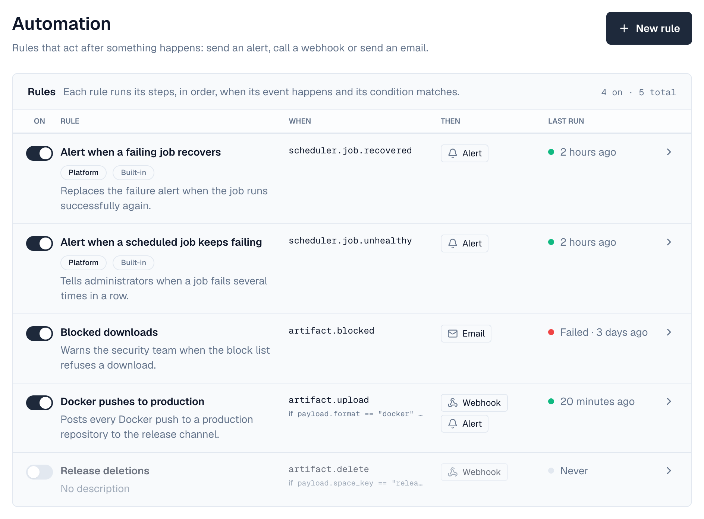
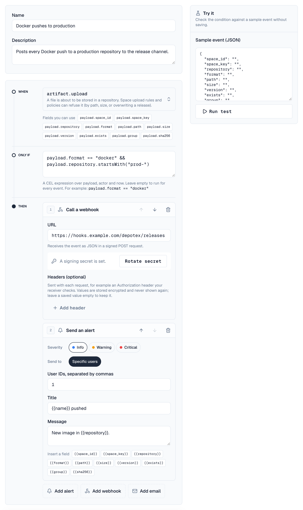
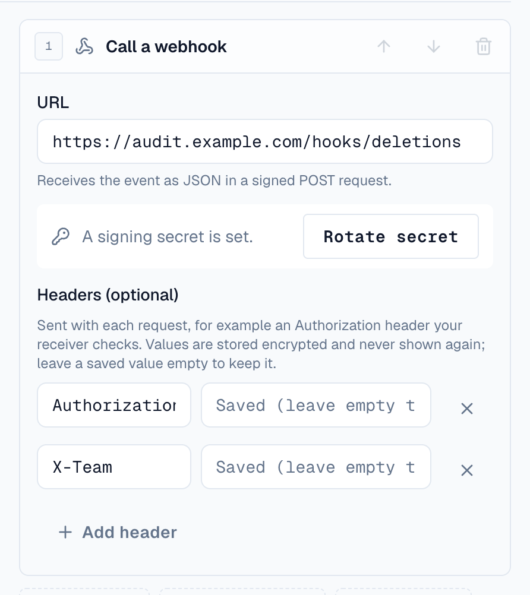
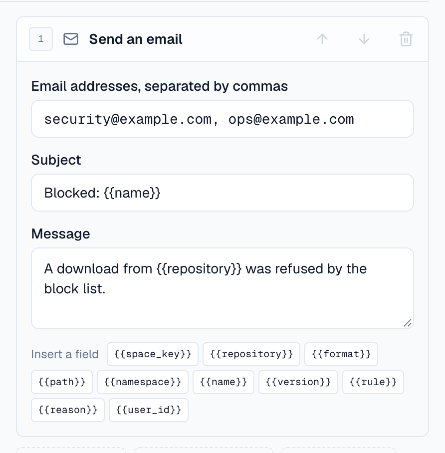

Automation rules act after something happens in Depotex. A rule watches one kind of event (a repository being created, a job failing), optionally checks a condition, and then runs its steps: send an alert, call a webhook in another system, or send an email.
License: Pro or higher to create and change rules; built-in rules run on every license. Permissions: automation:read to view, automation:write to create and change your organization's rules, automation:platform for platform rules. Organization admins can view and write rules; platform rules need a super admin.
Rules never slow down or block the action itself: they run in the background a few seconds later. To stop an action, use a policy instead.
1. Managing rules
Go to Settings → Automation. The list shows each rule with a switch to turn it on or off, its event and condition (When), what it does (Then: alerts, webhooks, emails) and its last run, with the status when that run didn't finish cleanly (Failed · 3 days ago). Click a rule to open it.

A rule's page has two tabs: Settings (the editor) and Runs.

- When: choose the event from the list, grouped by area, or type to search it. Events only platform rules can use are shown but can't be picked in an organization rule. Under the event, Fields you can use lists its fields: click one to add it to the condition.
- Only if: an optional condition (see Conditions).
- Then: the steps, run in order. Move a step up or down with its arrows, or remove it. In an alert or email message, Insert a field adds an event field such as {{name}}.
- Try it: check the condition against a sample event before saving. When it matches, it lists the steps that would run.
- Rule is on, Discard and Save changes stay at the bottom of the form while you scroll. Save is available once something changed.
- Runs: each time the rule ran, whether it succeeded, how many steps finished, how many attempts it took, and the error if one failed.
- Switch a rule off (in the list or with Rule is on) instead of deleting it. Delete rule asks first and also deletes its run history; built-in rules can't be deleted.
2. Steps
| Step | What it does |
|---|---|
| Send an alert | Creates an in-app alert. Title and message can include event fields, such as New repository {{name}}. Organization rules alert specific users of the organization; platform rules can also alert everyone with a role, or everyone. |
| Call a webhook | Sends the event as JSON to an https URL in a signed POST request, with up to 20 extra headers of your own (see Webhook headers). |
| Send an email | Emails up to 20 addresses. Subject and message can include event fields. Offered only while email is set up and on under Settings → Email (see Email steps). |
A rule can have up to 10 steps, run in order. If a step fails (for example the webhook is down), Depotex retries the rule later, starting at the step that failed, so earlier steps aren't repeated.
3. Conditions
Conditions use the same language as policies (CEL). They see the event's result as payload (never passwords or secrets), actor.id and now. Leave the condition empty to run for every event.
payload.format == "docker" // only Docker repositories
payload.consecutive_failures >= 5 // on scheduler.job.unhealthy (platform rule)4. Organization and platform rules
| Organization rule | Platform rule | |
|---|---|---|
| Who can manage | automation:write (organization admins) | automation:platform (super admins) |
| Events it sees | Events in its organization, for events that support organization rules | Every organization's events, and system events such as failing jobs |
| Alert recipients | Specific users of the organization | Users, roles or everyone |
5. Built-in rules
Depotex ships two platform rules: an alert when a scheduled job keeps failing, and one when it recovers. Super admins can change their recipients or wording, or switch them off, under Settings → Automation; they can't be deleted.
6. Webhooks
When you save a rule with a webhook step, Depotex shows its signing secret once. Copy it into the receiving system. Each webhook step then shows A signing secret is set; Rotate secret there replaces it (after you confirm) and shows the new one once.
| Header | Meaning |
|---|---|
| Depotex-Event | The event name, e.g. depot.repository.create |
| Depotex-Delivery | Unique for the event and rule, the same on retries: use it to ignore duplicates |
| Depotex-Timestamp | Unix time the request was signed |
| Depotex-Signature | sha256= and the hex HMAC-SHA256 of <timestamp>.<body> with the secret |
{
"id": "1042-7",
"event": "depot.repository.create",
"occurredAt": "2026-09-30T12:00:00Z",
"orgId": 1,
"actor": "user:12",
"payload": {"id": 55, "name": "images", "format": "docker"},
"rule": {"id": 7, "name": "Tell ops about Docker repositories"}
}7. Webhook headers
A webhook step can send up to 20 extra headers, for example an Authorization header or an API key your receiver checks. Under the step's URL, choose Add header and enter a name and a value.

- Values are write-only. They are stored encrypted and never shown again, in the editor, the API or the audit log. A saved value shows Saved (leave empty to keep): leave it empty to keep it, or type a new one to replace it.
- A saved value stays with its receiver. If you change the URL to a different host (or from https to http), every header needs its value again, so a saved credential can't be sent somewhere new.
- Names Depotex sets itself can't be used: Host, Content-Length, Content-Type, Transfer-Encoding, connection headers (Connection, Keep-Alive, Upgrade, TE, Trailer, Proxy-*), Expect and any name starting with Depotex-. Depotex's own headers are always set last, so the signature can't be replaced.
- Names use the characters allowed in HTTP header names (letters, digits and the symbols HTTP allows), up to 100 characters. Values are up to 4096 characters, without line breaks or other control characters. Each name may appear once.
Any response other than 2xx counts as a failure and is retried with increasing delays (up to EVENT_MAX_ATTEMPTS, 8 by default); redirects aren't followed. Check the signature and reject old timestamps in your receiver.
Webhooks can only reach public https addresses. Private, loopback and link-local addresses are refused, even if a hostname later points there. For internal receivers, the operator can set AUTOMATION_WEBHOOK_ALLOW_PRIVATE=true (and AUTOMATION_WEBHOOK_ALLOW_HTTP=true for plain http).
8. Email steps
An email step sends a message to a list of addresses when the rule runs, through the mail server set up under Settings → Email. The step is offered only while email is set up and turned on there; until then the editor explains why it's missing.

| Field | Rules |
|---|---|
| Email addresses | 1 to 20 addresses, separated by commas, each once |
| Subject | Required, up to 200 characters. Can use event fields, such as New repository {{name}}; if the fields leave it empty, the rule's name is used |
| Message | Optional, up to 5000 characters, with event fields too |
Each address gets its own email, with the rule's name, the event and a link to the rule. All of a step's emails are queued together; they are then sent and retried like every other Depotex email.
If email is turned off after a rule was saved, its email step fails and the run shows the error email isn't set up (Settings → Email). That run isn't retried: turning email back on applies to the next events.
9. Loops
A rule's steps can cause new events, for example an alert step raises alert.create. Depotex counts how many rules led to an event and stops after AUTOMATION_MAX_DEPTH (3 by default); the run shows Stopped (loop).
10. Performance
- An event with no rules for its organization costs nothing extra.
- Each matching event writes one run and runs the steps in the background; the action itself isn't slowed down.
- Broad rules on busy events add up. A rule without a condition on a frequent event runs for every one of them, and every webhook call waits up to AUTOMATION_WEBHOOK_TIMEOUT. Keep conditions specific.
- Changes to rules take effect immediately on all servers with Redis, and within AUTOMATION_CACHE_TTL (10 s) without it.
11. API
| Method | Endpoint | Permission | Description |
|---|---|---|---|
| GET | /api/automation/events | automation:read | Events rules can use, with their fields, and emailAvailable (whether email steps can be saved) |
| GET / POST | /api/automation/rules | read / write | List / create (the response includes webhookSecret once; header values are never returned, only {"name", "set": true}) |
| GET / PUT / DELETE | /api/automation/rules/{id} | read / write / write | View / change (send the version you edited; a header sent without value keeps its saved value while the URL stays on the same host) / delete |
| POST | /api/automation/rules/{id}/rotate-secret | write | New webhook signing secret |
| GET | /api/automation/rules/{id}/runs | read | Runs, newest first (paginated) |
| POST | /api/automation/test | write | Try a draft rule's condition on a sample event |
curl -X POST /api/automation/rules -H "Content-Type: application/json" -d '{
"name": "Tell ops about Docker repositories",
"event": "depot.repository.create",
"condition": "payload.format == \"docker\"",
"steps": [
{"type": "alert", "alert": {"severity": "info", "targetType": "user", "targetValue": ["12"], "title": "New Docker repository {{name}}", "message": "Created in your organization."}},
{"type": "webhook", "webhook": {"url": "https://hooks.example.com/depotex", "headers": [{"name": "Authorization", "value": "Bearer <token>"}]}},
{"type": "email", "email": {"to": ["ops@example.com"], "subject": "New Docker repository {{name}}", "message": "Created in your organization."}}
]
}'12. Settings
| Variable | Default | Description |
|---|---|---|
| AUTOMATION_MAX_DEPTH | 3 | How many rules in a row may cause each other before Depotex stops (loop protection) |
| AUTOMATION_CACHE_TTL | 10s | How quickly a server picks up rule changes when Redis isn't available |
| AUTOMATION_COST_LIMIT | 10000 | Maximum size of a condition's work |
| AUTOMATION_WEBHOOK_TIMEOUT | 10s | How long a webhook call may take |
| AUTOMATION_WEBHOOK_ALLOW_PRIVATE | false | Allow webhooks to private or loopback addresses |
| AUTOMATION_WEBHOOK_ALLOW_HTTP | false | Allow plain http webhook URLs |
| AUTOMATION_RUN_RETENTION_DAYS | 30 | How long runs are kept (cleaned up by the automation-run-cleanup job) |
| AUTOMATION_RUN_CLEANUP_SCHEDULE | 50 4 * * * | When the cleanup job runs |